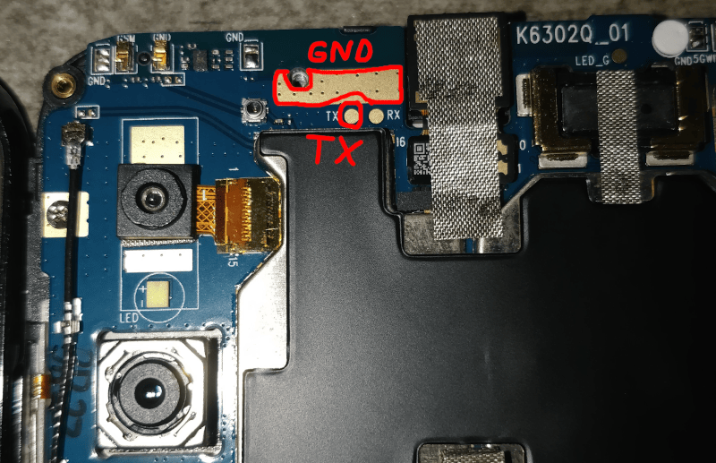

Volla Phone (volla-yggdrasil)/Hacking
Contents
Hacking on the Volla Phone
mtkclient infodump
Preloader - CPU: MT6763(Helio P23) Preloader - HW version: 0x0 Preloader - WDT: 0x10007000 Preloader - Uart: 0x11002000 Preloader - Brom payload addr: 0x100a00 Preloader - DA payload addr: 0x201000 Preloader - CQ_DMA addr: 0x10212000 Preloader - Var1: 0x7f Preloader - Disabling Watchdog... Preloader - HW code: 0x690 Preloader - Target config: 0x0 Preloader - SBC enabled: False Preloader - SLA enabled: False Preloader - DAA enabled: False Preloader - SWJTAG enabled: False Preloader - EPP_PARAM at 0x600 after EMMC_BOOT/SDMMC_BOOT: False Preloader - Root cert required: False Preloader - Mem read auth: False Preloader - Mem write auth: False Preloader - Cmd 0xC8 blocked: False Preloader - Get Target info Preloader - HW subcode: 0x8a00 Preloader - HW Ver: 0xca01 Preloader - SW Ver: 0x1 DA_handler - Device is unprotected.
Disassembling the device
For a full video on disassembling the phone you can see this YouTube video for example with interesting parts around 0:20–4:00.
Motherboard UART pins
There are a few candidates for
GND
, but here's what I ended up using successfully:

{kind=link}
UART logs before kernel boots
$ cat bootloader-uart.log
Pll init start... mtcmos Start.. mtcmos Done! Pll init Done! [PWRAP] si_en_sel = 0, si_ck_sel = 0, *PMIC_WRAP_SI_SAMPLE_CTRL = 0, rdata = 56A9 [PWRAP] InitSiStrobe (7, 0, 5A65) Data Boundary Is Found !! [PWRAP] InitSiStrobe (7, 7, 5A65) Data Boundary Is Found !! Current RTC time:[2010/1/1 0:34:5] DATE_CODE_YY:0, DATE_CODE_WW:0 [SegCode] Segment Code:0x13, PROJECT_CODE:0x0, FAB_CODE:0x0, RW_STA:0x0, CTL:0x0, DCM:0x4 [PMIC]Preloader Start [PMIC]MT6356 CHIP Code = 0x5640 [PMIC]POWER_HOLD ON [PMIC]PowerHold = 0x1 [PMIC]TOP_RST_STATUS[0x15C]=0x4F [PMIC]PONSTS[0xA]=0x4 [PMIC]POFFSTS[0xC]=0x80 [PMIC]PGSTATUS0[0x14]=0xFFFF [PMIC]PGSTATUS1[0x16]=0xE000 [PMIC]PSOCSTATUS[0x18]=0x0 [PMIC]BUCK_OC_SDN_STATUS[0xB3A]=0x0 [PMIC]BUCK_OC_SDN_EN[0xB4A]=0x19F [PMIC]THERMALSTATUS[0x1A]=0x0 [PMIC]STRUP_CON4[0x374]=0x0 [PMIC]TOP_RST_MISC[0x156]=0x1304 [PMIC]TOP_CLK_TRIM[0x20C]=0x6EC0 [PMIC]just_rst = 0 [PMIC] pmic_auxadc_init_setting_v1 battery exists [PMIC]disable usbdl wo battery [PMIC]pmic_wdt_set [PMIC]pmic_wdt_set Reg[0x156]=0x1325 [PMIC] pmic_smps_testmode_b [I2C] 359: id=6,addr: 6B, transfer error [I2C] 365: I2C_ACKERR [I2C] 232: I2C structure: [I2C] Clk=13650,Id=6,Mode=1,St_rs=0,Dma_en=0,Op=3,Poll_en=1,Irq_stat=2 [I2C] Trans_len=1,Trans_num=2,Trans_auxlen=1,Data_size=FFFF,speed=100 [I2C] 235: base address 0x11005000 [I2C] 257: I2C register: [I2C] SLAVE_ADDR=D6,INTR_MASK=F8,INTR_STAT=3,CONTROL=38,TRANSFER_LEN=1 [I2C] TRANSAC_LEN=2,DELAY_LEN=2,TIMING=216,LTIMING=96,START=0,FIFO_STAT=1101 [I2C] IO_CONFIG=1A0,HS=0,DCM_EN=6,DEBUGSTAT=300,EXT_CONF=8001,TRANSFER_LEN_AUX=1,CLOCK_DIV=4 [I2C] 905: write_read 0x10001 bytes fails,ret=-121. mt6311_read_byte: i2c_read: ret_code: -1 [I2C] 359: id=6,addr: 6B, transfer error [I2C] 365: I2C_ACKERR [I2C] 232: I2C structure: [I2C] Clk=13650,Id=6,Mode=1,St_rs=0,Dma_en=0,Op=3,Poll_en=1,Irq_stat=2 [I2C] Trans_len=1,Trans_num=2,Trans_auxlen=1,Data_size=FFFF,speed=100 [I2C] 235: base address 0x11005000 [I2C] 257: I2C register: [I2C] SLAVE_ADDR=D6,INTR_MASK=F8,INTR_STAT=3,CONTROL=38,TRANSFER_LEN=1 [I2C] TRANSAC_LEN=2,DELAY_LEN=2,TIMING=216,LTIMING=96,START=0,FIFO_STAT=1101 [I2C] IO_CONFIG=1A0,HS=0,DCM_EN=6,DEBUGSTAT=300,EXT_CONF=8001,TRANSFER_LEN_AUX=1,CLOCK_DIV=4 [I2C] 905: write_read 0x10001 bytes fails,ret=-121. mt6311_read_byte: i2c_read: ret_code: -1 [update_mt6311_chip_id] proj_id=0x0, swcid=0x1, g_mt6311_cid=0x1 [6311_prb] PL g_mt6311_hw_exist=0, g_mt6311_driver_ready=1 [6311_prb] PL No I2C_EXT_BUCK_CHANNEL (6) [6311_prb] PL No GPIO_EXT_BUCK_VSEL_PIN (0x0) [rt5738_driver_probe] [rt5738_hw_component_detect] exist = 1, Chip ID = 0 rt5738_vdd2_hw_init [0x0]=0xA5 [0x1]=0xA5 [0x2]=0x92 [0x3]=0x0 [0x4]=0x0 [0x5]=0x81 [rt5738_driver_probe] PL g_rt5738_0_hw_exist=1, g_rt5738_driver_ready=1 [rt5738_hw_component_detect] exist = 1, Chip ID = 0 rt5738_vddq_hw_init [0x0]=0x14 [0x1]=0x3C [0x2]=0x92 [0x3]=0x0 [0x4]=0x0 [0x5]=0x81 [rt5738_driver_probe] PL g_rt5738_1_hw_exist=1, g_rt5738_driver_ready=1 [rt5738_driver_probe] PL No I2C_EXT_BUCK_CHANNEL (1) register vs1 OK register vmodem OK register vcore OK register vsram_others OK register vsram_gpu OK register vproc OK register vs2 OK register vsram_proc OK register vpa OK register vdram OK register vsim1 OK register vsim2 OK register vmc OK [MT6356] 1 7,80 [MT6356] 1 5,48 [MT6356] 1 7,64 [MT6356] 1 4,64 [MT6356] 1 3,64 [MT6356] 1 2,48 [MT6356] 1 1,44 [MT6356] get volt 7, 64, 900000 vsram_proc = 900000 uV [MT6356] get volt 4, 64, 900000 vsram_gpu = 900000 uV [MT6356] get volt 3, 64, 900000 vsram_others = 900000 uV [MT6356] get volt 5, 48, 800000 vproc = 800000 uV [MT6356] get volt 2, 48, 800000 vcore = 800000 uV [MT6356] get volt 1, 44, 775000 vmodem = 775000 uV [MT6356] 2 7,1 [MT6356] 2 4,0 [MT6356] 2 3,1 [MT6356] 2 5,1 [MT6356] 2 2,1 [MT6356] 2 1,1 [pmic_init]Done vproc/vsram run as hw default [PLFM] Init PWRAP: OK(0) [PLFM] Init PMIC: OK(0) [PLFM] chip_hw_ver[CA01], chip_sw_ver[1] [BLDR] Build Time: 20200628-234538 clk_buf_dump_dts_log: PMIC_CLK_BUF?_STATUS=2 1 1 2 0 0 1 clk_buf_dump_dts_log: PMIC_CLK_BUF?_DRV_CURR=-1 -1 -1 -1 -1 -1 -1 clk_buf_dump_clkbuf_log DCXO_CW00=0x4E1D, CW02=0x3AEF, CW11=0xB800, CW14=0x82B5, CW16=0x9455, CW20=0x811, top_spi_con1=0x1 clk_buf_dump_clkbuf_log DCXO_CW00=0x4E1D, CW02=0x3AEF, CW11=0xB800, CW14=0x82B5, CW16=0x9455, CW20=0x811, top_spi_con1=0x0 clk_buf_init_pmic_wrap: DCXO_CONN_ADR0/WDATA0/ADR1/WDATA1=0x2AC/0/2AC/1 clk_buf_init_pmic_wrap: DCXO_NFC_ADR0/WDATA0/ADR1/WDATA1/EN=0x9CA/100/9C8/100/3 [RGU] EMI_DCS_SUCCESS 0 [RGU] DVFSRC_SUCCESS 0 [DDR Reserve] ddr reserve mode not be enabled yet [RGU] ==== Dump RGU Reg ======== [RGU] RGU MODE: 0x4D [RGU] RGU LENGTH: 0xFFE0 [RGU] RGU STA: 0x0 [RGU] RGU INTERVAL: 0xFFF [RGU] RGU SWSYSRST: 0x8000 [RGU] RGU DEBUG_CTL: 0x200F1 [RGU] RGU LATCH_CTL: 0x0 [RGU] ==== Dump RGU Reg End ==== [RGU] g_rgu_status: 0 (0x0) [RGU] mtk_wdt_mode_config mode value=10, tmp:22000010 [RGU] PL P ON [RGU] Bypass pwrkey info: WDT does not trigger reboot [RGU] mtk_wdt_mode_config mode value=5D, tmp:2200005D [RGU] mtk_wdt_reset_deglitch_enable: MTK_WDT_RSTDEG_EN1(8000A357), MTK_WDT_RSTDEG_EN2(800067D2) [RGU] rgu_update_reg: 0, bits: 0xC000, addr: 0x10007040, val: 0x200F1 [RGU] rgu_update_reg: 0, bits: 0x300, addr: 0x100070A0, val: 0xFF [RGU] mtk_wdt_init: MTK_WDT_DEBUG_CTL(0x200F1) [RGU] mtk_wdt_init: MTK_WDT_DEBUG_CTL2(0xFF) [RGU] mtk_wdt_init: MTK_WDT_LATCH_CTL(0x1F71) [RGU] mtk_wdt_init: MTK_WDT_REQ_MODE(3E0013), MTK_WDT_REQ_IRQ_EN(3E0013) Enter mtk_kpd_gpio_set! after set KP enable: KP_SEL = 0x1C70 ! [RTC] enable_dcxo first con = 0x486, osc32con = 0xDBEE, sec = 0x25F0 [RTC] get_frequency_meter: input=0x0, ouput=5 [RTC] get_frequency_meter: input=0x0, ouput=0 [RTC] get_frequency_meter: input=0x0, ouput=0 [RTC] get_frequency_meter: input=0x0, ouput=5 [RTC] get_frequency_meter: input=0x0, ouput=3935 [RTC] rtc_boot_check1 powerkey1 = 0xA357, powerkey2 = 0x67D2, without LPD [RTC] bbpu = 0x1, con = 0x486, osc32con = 0xDBEE, sec = 0x25F0, yea = 0xC102 [RTC] rtc_boot_check2 powerkey1 = 0xA357, powerkey2 = 0x67D2 [RTC] rtc_boot_check Writeif_unlock [RTC] EOSC_Cali: RG_FQMTR_CKSEL=0x42 [RTC] get_frequency_meter: input=0xF, ouput=802 [RTC] EOSC_Cali: val=0x322 [RTC] get_frequency_meter: input=0x7, ouput=681 [RTC] EOSC_Cali: val=0x2A9 [RTC] get_frequency_meter: input=0xB, ouput=743 [RTC] EOSC_Cali: val=0x2E7 [RTC] get_frequency_meter: input=0xD, ouput=773 [RTC] EOSC_Cali: val=0x305 [RTC] get_frequency_meter: input=0xE, ouput=787 [RTC] EOSC_Cali: val=0x313 [RTC] get_frequency_meter: input=0xE, ouput=787 [RTC] get_frequency_meter: input=0xF, ouput=801 [RTC] EOSC cali val = 0xDACE [RTC] RTC_SPAR0=0x0 [RTC] XO_XMODE_M = 1 , XO_EN32K_M = 1 [RTC] 32k-less mode [RTC] rtc_2sec_reboot_check 0x25F0, without 2sec reboot, type 0x2 [RTC] rtc_2sec_stat_clear [RTC] rtc_lpd_init RTC_CON=0x486 [RTC] irqsta = 0x0, pdn1 = 0x0, pdn2 = 0x201, spar0 = 0x80, spar1 = 0x800 [RTC] new_spare0 = 0x6000, new_spare1 = 0x5001, new_spare2 = 0x1, new_spare3 = 0xE301 [RTC] bbpu = 0x1, con = 0x486, cali = 0x25F0, osc32con = 0xDAEE [PMIC]IsUsbCableIn 1 [PLFM] USB/charger boot! [PMIC]POWER_HOLD ON [PMIC]PowerHold = 0x1 [RTC] rtc_bbpu_power_on done [PMIC]init_setting [PMIC] init setting date: 2017-05-10, Done battery exists [pl_battery_init] is_fg_init:0 , force_init:0 bat:1 [fg_get_time] low:0xCA0 high:0x0 rtime:0xx 0x650 p1=1616 p2=15! [fg_get_soff_time] low:0xC9C high:0x0 rtime:0xx 0x64E p1=1614 p2=0! [fg_init] fg_reset_status 1 do_init_fgadc_reset 0 fg_curr_time 1616 fg_soff_valid:1 shutdown_pmic_time 1614 hw_id 0x5640 sw_id 0x5640, 4360 2 0x1 0x2329 1 0 battery exists [pl_check_bat_protect_status]: check VBAT=4354 mV with 0 mV, VCHR 4986 mV ,VCHR_HV=6500 start charging... [pl_check_bat_protect_status]: check VBAT=4354 mV with 0 mV, stop charging... mtk_kpd_gpio_set Already! mtk detect key function pmic_detect_homekey MTK_PMIC_RST_KEY = 17 Log Turned Off. [ATF](0)[5.051215]INFO: BOOT_REASON: 1 [ATF](0)[5.051678]INFO: IS_ABNORMAL_BOOT: 0 [ATF](0)[5.052184]INFO: SPMFW_BASE_ADDR: 0x7fef0000 [ATF](0)[5.052787]INFO: SPMFW_BASE_SIZE: 0x10000 [ATF](0)[5.053359]INFO: #@# spm_config_spmfw_base(1118) spm_base_addr 0x7fef0000, spm_base_size 0x10000 [ATF](0)[5.054744]INFO: CPUxGPT reg(deaddead) [ATF](0)[5.055278]INFO: Secondary bootloader is AArch32 [ATF](0)[5.055919]INFO: bl31_plat_arch_setup() [ATF](0)[5.056469]INFO: mmap atf buffer : 0x6ffc0000, 0x40000 [ATF](0)[5.059636]INFO: mmap: [ATF](0)[5.059991]INFO: VA:0x100000 PA:0x100000 size:0x1b000 attr:0xa [ATF](0)[5.060831]INFO: VA:0x101000 PA:0x101000 size:0x11000 attr:0x2 [ATF](0)[5.061671]INFO: VA:0x11c000 PA:0x11c000 size:0x2000 attr:0x18 [ATF](0)[5.062511]INFO: VA:0xc000000 PA:0xc000000 size:0x400000 attr:0x8 [ATF](0)[5.063383]INFO: VA:0xc530000 PA:0xc530000 size:0x90000 attr:0x8 [ATF](0)[5.064245]INFO: VA:0x10000000 PA:0x10000000 size:0x490000 attr:0x8 [ATF](0)[5.065139]INFO: VA:0x11000000 PA:0x11000000 size:0x4000000 attr:0x8 [ATF](0)[5.066043]INFO: VA:0x201d7000 PA:0x201d7000 size:0x1000 attr:0x8 [ATF](0)[5.066915]INFO: VA:0x54600000 PA:0x54600000 size:0xc000 attr:0x2 [ATF](0)[5.067788]INFO: VA:0x5460c000 PA:0x5460c000 size:0x2b000 attr:0xa [ATF](0)[5.068671]INFO: VA:0x54637000 PA:0x54637000 size:0x1000 attr:0x8 [ATF](0)[5.069543]INFO: VA:0x6ffc0000 PA:0x6ffc0000 size:0x40000 attr:0x18 [ATF](0)[5.070437]INFO: VA:0x7fef0000 PA:0x7fef0000 size:0x10000 attr:0xa [ATF](0)[5.071320]INFO: [ATF](0)[5.073548]INFO: abnormal_boot: 0x0, cflag: 0xffffffff [ATF](0)[5.079302]INFO: mt_log_setup [ATF](0)[5.079725]INFO: -mt_log_buf_start: 0x6ffc0000 [ATF](0)[5.080360]INFO: -mt_log_buf_size: 0x40000 [ATF](0)[5.080953]INFO: -buf_addr: 0x6ffc0100 [ATF](0)[5.081502]INFO: -buf_size: 0x13f00 [ATF](0)[5.082019]INFO: -write_pos: 0x0 [ATF](0)[5.082504]INFO: -read_pos: 0x0 [ATF](0)[5.082977]INFO: -atf_buf_lock: 0x0 [ATF](0)[5.083494]INFO: -log_buf_end : 0x6ffd3fff [ATF](0)[5.084086]INFO: -ATF_EXCEPT_BUF_SIZE_PER_CPU : 0x1000 [ATF](0)[5.084808]INFO: -ATF_EXCEPT_BUF_SIZE : 0x8000 [ATF](0)[5.085443]INFO: -PLATFORM_CORE_COUNT : 0x8 [ATF](0)[5.086046]INFO: -atf_except_write_pos_per_cpu[0]: 0x6fff4000 [ATF](0)[5.086843]INFO: -atf_except_write_pos_per_cpu[1]: 0x6fff5000 [ATF](0)[5.087640]INFO: -atf_except_write_pos_per_cpu[2]: 0x6fff6000 [ATF](0)[5.088437]INFO: -atf_except_write_pos_per_cpu[3]: 0x6fff7000 [ATF](0)[5.089234]INFO: -atf_except_write_pos_per_cpu[4]: 0x6fff8000 [ATF](0)[5.090031]INFO: -atf_except_write_pos_per_cpu[5]: 0x6fff9000 [ATF](0)[5.090828]INFO: -atf_except_write_pos_per_cpu[6]: 0x6fffa000 [ATF](0)[5.091625]INFO: -atf_except_write_pos_per_cpu[7]: 0x6fffb000 [ATF](0)[5.092422]INFO: -crash_flag : 0x41544641 [ATF](0)[5.093004]INFO: -crash_log_addr : 0x6ffd4000 [ATF](0)[5.093628]INFO: -crash_log_size : 0x20000 [ATF](0)[5.094256]INFO: ATF log service is registered (0x6ffc0000, aee:0x6fffc000) [ATF](0)[5.095179]NOTICE: BL31: v1.3(debug):f1a58d20b0 [ATF](0)[5.095792]NOTICE: BL31: Built : 19:35:58, Oct 31 2020 [ATF](0)[5.096482]NOTICE: BL31: v1.3(debug):f1a58d20b0 [ATF](0)[5.097095]NOTICE: BL31: Built : 19:35:58, Oct 31 2020 [ATF](0)[5.097785]INFO: platform_setup_cpu() [ATF](0)[5.098313]INFO: addr of cci_adb400_dcm_config: 0x0 [ATF](0)[5.098991]INFO: addr of sync_dcm_config: 0x0 [ATF](0)[5.099605]INFO: mp0_spmc: 0x3a2f37bb [ATF](0)[5.100133]INFO: mp1_spmc: 0x640c043 [ATF](0)[5.100689]INFO: #@# spm_load_pcm_firmware(144) use spmfw partition for pcm_suspend_lp4_2ch.bin - suspend_v1p31_20190125 [ATF](0)[5.102099]INFO: #@# spm_load_pcm_firmware(144) use spmfw partition for pcm_suspend_lp4_1ch.bin - suspend_v1p31_20190125 [ATF](0)[5.103522]INFO: #@# spm_load_pcm_firmware(144) use spmfw partition for pcm_suspend_lp3_1ch.bin - suspend_v1p31_20190125 [ATF](0)[5.104943]INFO: #@# spm_load_pcm_firmware(144) use spmfw partition for pcm_suspend_lp4_2ch_2400.bin - suspend_v1p31_20190125 [ATF](0)[5.106418]INFO: BL31: Initializing runtime services [ATF](0)[5.107126]INFO: BL31: Initializing BL32 [ATF](0)[5.107673][ATF--uTos] version [stable_2.8.0 for Android P_20181109_stage3] [ATF](0)[5.108589] mtee ST [0] [ATF](0)[5.108965]INFO: BL31: Preparing for EL3 exit to normal world [ATF](0)[5.109740]INFO: Entry point address = 0x56000000 [ATF](0)[5.110397]INFO: SPSR = 0x1d3 [ATF](0)[5.110842]NOTICE: NS-SCR_EL3_EFIN=0x4 [ATF](0)[5.111356]NOTICE: S-SCR_EL3_EFIN=0x0 [ATF](0)[5.835709]INFO: Get ATF log buffer info. for AEE dump in LK. [ATF](0)[5.836484]INFO: Buf addr:0x6ffd4000, buf size:131072, flag addr:0x6ffc0040, flag value:0x41544641 [ATF](0)[7.805631]INFO: save kernel info [ATF](0)[7.806103]INFO: Kernel_EL 2 [ATF](0)[7.806533]NOTICE: Kernel is 64Bit [ATF](0)[7.807007]NOTICE: pc=0x40080000, r0=0x54000000, r1=0x0 [ATF](0)[7.807707]INFO: BL3-1: Preparing for EL3 exit to normal world, Kernel [ATF](0)[7.808590]INFO: BL3-1: Next image address = 0x40080000 [ATF](0)[7.809312]INFO: BL3-1: Next image spsr = 0x3c9 [ATF](0)[7.809953]INFO: [spmc_init]change to SPMC mode !!! [ATF](0)[7.810646]INFO: el3_exit
Minimal mainline DTBO
The
lk
bootloader on MT6763 appears to force a requirement on at least a
gpio_init_default
overlay node to exist on devices that have a
dtbo
partition, so in this case of Volla Phone the following is enough to boot:
$ cat minimal-dtbo.dts
/*
* Minimal DTBO to pass lk bootloader checks on Volla Phone (volla-yggdrasil) / MT6763
*/
/dts-v1/;
/ {
fragment@0 {
target = <0xffffffff>;
__overlay__ {
gpio_init_default = <0x00 0x00 0x00 0x00 0x01 0x00 0x01 0x01 0x00 0x00 0x00 0x01 0x01 0x01 0x02 0x00 0x00 0x00 0x01 0x00 0x01 0x03 0x00 0x00 0x00 0x01 0x01 0x01 0x04 0x00 0x00 0x00 0x01 0x00 0x00 0x05 0x00 0x00 0x00 0x01 0x01 0x00 0x06 0x00 0x00 0x00 0x01 0x01 0x00 0x07 0x02 0x00 0x00 0x01 0x00 0x00 0x08 0x00 0x00 0x00 0x01 0x00 0x00 0x09 0x00 0x00 0x00 0x01 0x01 0x00 0x0a 0x00 0x01 0x00 0x00 0x00 0x00 0x0b 0x03 0x00 0x00 0x01 0x01 0x00 0x0c 0x03 0x00 0x00 0x01 0x01 0x00 0x0d 0x04 0x00 0x00 0x01 0x01 0x00 0x0e 0x00 0x01 0x00 0x00 0x00 0x00 0x0f 0x04 0x00 0x00 0x01 0x00 0x00 0x10 0x04 0x01 0x01 0x00 0x01 0x00 0x11 0x00 0x01 0x00 0x00 0x00 0x00 0x12 0x00 0x01 0x00 0x00 0x00 0x00 0x13 0x00 0x01 0x00 0x00 0x00 0x00 0x14 0x06 0x01 0x00 0x00 0x00 0x00 0x15 0x00 0x01 0x01 0x00 0x00 0x00 0x16 0x00 0x00 0x00 0x01 0x00 0x00 0x17 0x00 0x01 0x00 0x00 0x00 0x00 0x18 0x00 0x01 0x00 0x01 0x00 0x00 0x19 0x00 0x01 0x00 0x01 0x00 0x00 0x1a 0x00 0x01 0x00 0x00 0x00 0x00 0x1b 0x00 0x01 0x00 0x01 0x00 0x00 0x1c 0x00 0x01 0x00 0x01 0x00 0x00 0x1d 0x01 0x01 0x00 0x01 0x00 0x00 0x1e 0x01 0x00 0x00 0x01 0x01 0x00 0x1f 0x01 0x00 0x00 0x01 0x01 0x00 0x20 0x01 0x00 0x00 0x01 0x01 0x00 0x21 0x01 0x00 0x00 0x01 0x01 0x00 0x22 0x01 0x00 0x00 0x01 0x01 0x00 0x23 0x01 0x00 0x00 0x01 0x01 0x00 0x24 0x01 0x01 0x00 0x01 0x00 0x00 0x25 0x01 0x01 0x00 0x01 0x00 0x00 0x26 0x01 0x01 0x00 0x01 0x00 0x00 0x27 0x01 0x01 0x00 0x01 0x00 0x00 0x28 0x01 0x00 0x00 0x01 0x01 0x00 0x29 0x00 0x00 0x00 0x01 0x01 0x00 0x2a 0x01 0x01 0x00 0x01 0x00 0x00 0x2b 0x01 0x01 0x00 0x01 0x00 0x00 0x2c 0x01 0x00 0x00 0x01 0x00 0x00 0x2d 0x01 0x01 0x00 0x00 0x00 0x00 0x2e 0x00 0x00 0x00 0x01 0x00 0x00 0x2f 0x01 0x00 0x00 0x01 0x01 0x00 0x30 0x01 0x00 0x00 0x01 0x01 0x00 0x31 0x01 0x00 0x00 0x01 0x01 0x00 0x32 0x01 0x00 0x00 0x01 0x01 0x00 0x33 0x01 0x00 0x00 0x01 0x01 0x00 0x34 0x01 0x01 0x00 0x01 0x00 0x00 0x35 0x01 0x01 0x00 0x01 0x00 0x00 0x36 0x01 0x01 0x00 0x01 0x00 0x00 0x37 0x01 0x01 0x00 0x01 0x00 0x00 0x38 0x01 0x01 0x00 0x01 0x00 0x00 0x39 0x01 0x01 0x00 0x01 0x00 0x00 0x3a 0x01 0x01 0x00 0x00 0x00 0x00 0x3b 0x01 0x01 0x00 0x01 0x00 0x00 0x3c 0x01 0x01 0x00 0x01 0x00 0x00 0x3d 0x01 0x00 0x00 0x01 0x00 0x00 0x3e 0x01 0x00 0x00 0x01 0x00 0x00 0x3f 0x01 0x00 0x00 0x01 0x00 0x00 0x40 0x01 0x00 0x00 0x01 0x00 0x00 0x41 0x02 0x00 0x00 0x01 0x00 0x00 0x42 0x02 0x00 0x00 0x01 0x00 0x00 0x43 0x01 0x00 0x00 0x01 0x00 0x00 0x44 0x01 0x00 0x00 0x01 0x00 0x00 0x45 0x01 0x01 0x00 0x01 0x00 0x00 0x46 0x01 0x01 0x00 0x01 0x00 0x00 0x47 0x01 0x00 0x00 0x01 0x00 0x00 0x48 0x01 0x00 0x00 0x01 0x00 0x00 0x49 0x01 0x01 0x00 0x01 0x00 0x00 0x4a 0x01 0x01 0x00 0x01 0x00 0x00 0x4b 0x01 0x01 0x00 0x01 0x00 0x00 0x4c 0x01 0x01 0x00 0x01 0x00 0x00 0x4d 0x01 0x01 0x00 0x01 0x00 0x00 0x4e 0x00 0x01 0x01 0x00 0x00 0x00 0x4f 0x00 0x01 0x00 0x00 0x00 0x00 0x50 0x00 0x01 0x00 0x01 0x00 0x00 0x51 0x01 0x00 0x00 0x01 0x01 0x00 0x52 0x01 0x00 0x00 0x01 0x01 0x00 0x53 0x01 0x00 0x00 0x01 0x01 0x00 0x54 0x01 0x00 0x00 0x01 0x01 0x00 0x55 0x01 0x01 0x00 0x01 0x00 0x00 0x56 0x01 0x00 0x00 0x01 0x00 0x00 0x57 0x01 0x00 0x00 0x01 0x00 0x00 0x58 0x01 0x01 0x00 0x01 0x00 0x00 0x59 0x01 0x00 0x00 0x01 0x00 0x00 0x5a 0x00 0x01 0x00 0x00 0x00 0x00 0x5b 0x00 0x00 0x00 0x01 0x01 0x00 0x5c 0x01 0x01 0x00 0x00 0x00 0x00 0x5d 0x01 0x00 0x00 0x01 0x01 0x00 0x5e 0x01 0x00 0x00 0x01 0x01 0x00 0x5f 0x01 0x00 0x00 0x01 0x01 0x00 0x60 0x01 0x01 0x01 0x00 0x00 0x00 0x61 0x00 0x01 0x00 0x00 0x00 0x00 0x62 0x00 0x01 0x00 0x00 0x00 0x00 0x63 0x01 0x01 0x00 0x00 0x00 0x00 0x64 0x01 0x01 0x00 0x00 0x00 0x00 0x65 0x00 0x01 0x00 0x00 0x00 0x00 0x66 0x00 0x01 0x00 0x00 0x00 0x00 0x67 0x01 0x00 0x00 0x01 0x01 0x00 0x68 0x01 0x00 0x00 0x01 0x01 0x00 0x69 0x01 0x00 0x00 0x01 0x01 0x00 0x6a 0x01 0x00 0x00 0x01 0x01 0x00 0x6b 0x00 0x01 0x00 0x00 0x00 0x00 0x6c 0x00 0x01 0x01 0x00 0x00 0x00 0x6d 0x00 0x01 0x00 0x00 0x00 0x00 0x6e 0x01 0x00 0x00 0x01 0x00 0x00 0x6f 0x01 0x00 0x00 0x01 0x00 0x00 0x70 0x01 0x00 0x01 0x01 0x00 0x00 0x71 0x01 0x00 0x00 0x01 0x00 0x00 0x72 0x01 0x00 0x00 0x01 0x00 0x00 0x73 0x01 0x00 0x00 0x01 0x00 0x00 0x74 0x01 0x00 0x00 0x01 0x00 0x00 0x75 0x01 0x00 0x00 0x01 0x00 0x00 0x76 0x01 0x00 0x00 0x01 0x00 0x00 0x77 0x01 0x00 0x00 0x01 0x00 0x00 0x78 0x01 0x00 0x00 0x01 0x00 0x00 0x79 0x01 0x00 0x00 0x01 0x00 0x00 0x7a 0x00 0x00 0x00 0x01 0x00 0x00 0x7b 0x00 0x00 0x00 0x01 0x00 0x00 0x7c 0x00 0x00 0x00 0x01 0x00 0x00 0x7d 0x00 0x00 0x00 0x01 0x00 0x00 0x7e 0x00 0x00 0x00 0x01 0x00 0x00 0x7f 0x00 0x00 0x00 0x01 0x00 0x00 0x80 0x00 0x00 0x00 0x01 0x00 0x00 0x81 0x00 0x00 0x00 0x01 0x00 0x00 0x82 0x00 0x00 0x00 0x01 0x00 0x00 0x83 0x00 0x01 0x00 0x00 0x00 0x00 0x84 0x00 0x00 0x00 0x01 0x00 0x00 0x85 0x00 0x00 0x00 0x01 0x00 0x00 0x86 0x01 0x00 0x00 0x00 0x00 0x01 0x87 0x01 0x01 0x00 0x00 0x00 0x00 0x88 0x01 0x00 0x00 0x00 0x00 0x00 0x89 0x01 0x00 0x00 0x00 0x00 0x00 0x8a 0x01 0x00 0x00 0x00 0x00 0x00 0x8b 0x01 0x00 0x00 0x00 0x00 0x00 0x8c 0x01 0x00 0x00 0x00 0x00 0x00 0x8d 0x01 0x00 0x00 0x00 0x00 0x00 0x8e 0x01 0x00 0x00 0x00 0x00 0x00 0x8f 0x01 0x00 0x00 0x00 0x00 0x00 0x90 0x01 0x00 0x00 0x00 0x00 0x00 0x91 0x01 0x01 0x01 0x00 0x00 0x00 0x92 0x01 0x00 0x00 0x00 0x00 0x00 0x93 0x01 0x00 0x00 0x00 0x00 0x00 0x94 0x01 0x01 0x01 0x00 0x00 0x00 0x95 0x01 0x01 0x00 0x00 0x00 0x00 0x96 0x01 0x01 0x00 0x01 0x00 0x00 0x97 0x01 0x01 0x00 0x01 0x00 0x00 0x98 0x00 0x00 0x00 0x01 0x00 0x00 0x99 0x00 0x00 0x00 0x01 0x00 0x00 0x9a 0x00 0x00 0x00 0x01 0x00 0x00 0x9b 0x00 0x00 0x00 0x01 0x00 0x00 0x9c 0x00 0x00 0x00 0x01 0x00 0x00 0x9d 0x00 0x00 0x00 0x01 0x00 0x00 0x9e 0x00 0x00 0x00 0x01 0x00 0x00 0x9f 0x00 0x00 0x00 0x01 0x00 0x00 0xa0 0x00 0x00 0x00 0x01 0x00 0x00 0xa1 0x00 0x00 0x00 0x01 0x00 0x00 0xa2 0x00 0x00 0x00 0x01 0x00 0x00 0xa3 0x00 0x00 0x00 0x01 0x00 0x00>;
};
};
__fixups__ {
gpio = "/fragment@0:target:0";
};
};
|
|
NOTE: On your mainline kernel DTS side you'll need the following for the bootloader to successfully merge (flatten) the DTBO over kernel DTB: |
/ {
/* Required by bootloader to merge with minimal DTBO */
gpio@10005000 {
compatible = "mediatek,gpio";
linux,phandle = <0xdead>;
phandle = <0xdead>;
};
__symbols__ {
gpio = "/gpio@10005000";
};
};
(the
phandle
values don't really matter, as long as they don't conflict with other nodes)
To use the minimal DTBO simply setup dtc and mkdtboimg and run the following:
dtc minimal-dtbo.dts -qo minimal-dtbo.dtb mkdtboimg create minimal-dtbo.img minimal-dtbo.dtb
I suggest you take a backup of the stock
dtbo
partition using
mtkclient
for example just in case it'll come in handy:
mtk r dtbo stock-dtbo.img
Then you can write this to the device using either
fastboot flash dtbo minimal-dtbo.img
or
mtk w dtbo minimal-dtbo.img
.